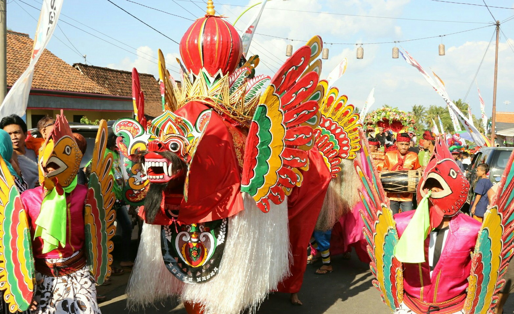

Sejarah
Upacara adat Osing merupakan tradisi yang telah diwariskan secara turun-temurun oleh masyarakat Suku Osing di Banyuwangi. Tradisi ini terus dilestarikan sebagai bagian dari kehidupan masyarakat dan menjadi warisan budaya yang dijaga dari generasi ke generasi.
Berbagai upacara adat seperti Tumpeng Sewu, Barong Ider Bumi, dan Petik Laut masih rutin dilaksanakan hingga saat ini sebagai bentuk pelestarian budaya dan identitas masyarakat Osing yang kuat di tengah arus modernisasi.
Makna Filosofis
Bagi masyarakat Osing, adat dan tradisi bukan sekadar warisan budaya, tetapi juga bentuk rasa syukur kepada Tuhan, penghormatan kepada leluhur, serta upaya menjaga keharmonisan antara manusia dan alam.
Rasa Syukur dan Penghormatan
Setiap upacara adat merupakan wujud terima kasih kepada Sang Pencipta dan bentuk bakti kepada para leluhur yang telah menjaga tanah Blambangan.
Harmoni dengan Alam
Upacara adat mengajarkan masyarakat untuk hidup selaras dengan alam, tidak merusaknya, dan memanfaatkannya dengan bijak.
Kebersamaan dan Gotong Royong
Nilai kebersamaan, gotong royong, dan saling menghormati menjadi bagian penting dalam kehidupan sehari-hari masyarakat Osing yang tercermin dalam setiap prosesi adat.
Jenis Upacara Adat
Masyarakat Osing memiliki beberapa upacara adat yang masih dilaksanakan hingga sekarang, di antaranya:
1. Tumpeng Sewu
Tradisi syukuran sebagai ungkapan rasa terima kasih atas hasil panen yang melimpah serta perlindungan yang diberikan Tuhan. Dilaksanakan di Desa Kemiren dengan melibatkan ribuan warga.
2. Barong Ider Bumi
Ritual tolak bala yang dilakukan dengan mengarak barong mengelilingi desa untuk memohon keselamatan dan perlindungan dari berbagai bencana. Dilaksanakan setiap tanggal 2 Syawal.
3. Petik Laut
Tradisi yang dilakukan para nelayan sebagai bentuk penghormatan kepada leluhur laut dan ungkapan syukur atas hasil tangkapan yang melimpah. Berpusat di daerah pesisir seperti Muncar.
Fakta Menarik
Tradisi yang Hidup
Masyarakat Osing masih melestarikan berbagai upacara adat yang diwariskan secara turun-temurun hingga saat ini dengan sangat antusias.
Pusat di Desa Kemiren
Barong Ider Bumi dilaksanakan setiap tahun dan menjadi salah satu tradisi yang paling dikenal di Desa Kemiren, pusat budaya Osing.
Simbol Kebersamaan
Tumpeng Sewu melibatkan banyak warga desa yang bersama-sama menyiapkan tumpeng sebagai simbol rasa syukur dan kebersamaan.
Paduan Unsur Budaya
Upacara adat Osing memadukan unsur keagamaan, penghormatan kepada leluhur, dan nilai pelestarian budaya secara harmonis.
Daya Tarik Wisata
Tradisi-tradisi adat Osing sering menarik perhatian wisatawan dan peneliti yang ingin mempelajari budaya Banyuwangi secara mendalam.
Galeri

